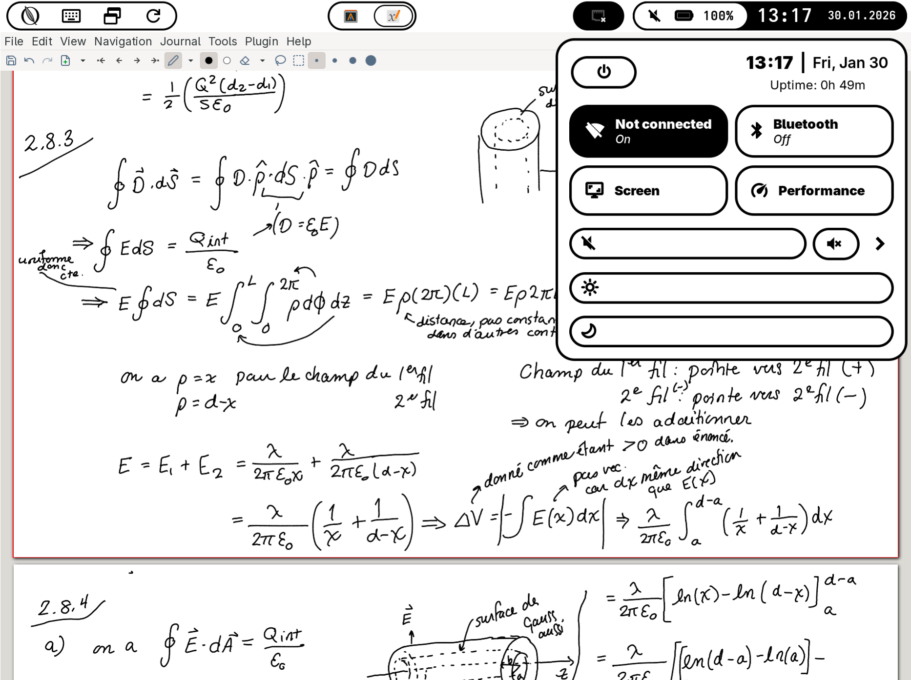

Quill OS is an open-source, fully-functional standalone OS for Pine64's PineNote.

Here are some of Quill OS' features:
Written almost exclusively in Rust (userspace)
Main Wayland UI using Niri as its compositor
Many eInk modes for fastest screen performance
Recovery framework made with Rust and Slint UI